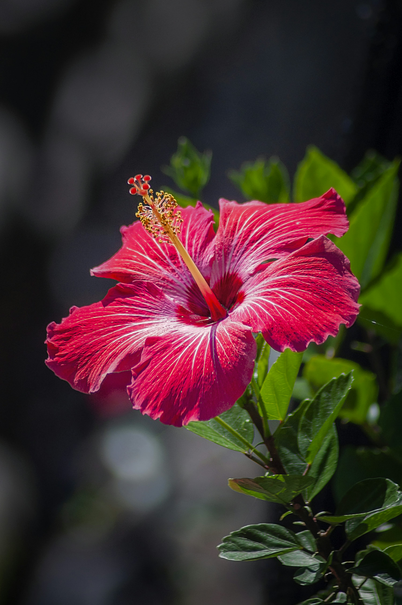

Hibisco (Hibiscus rosa-sinensis)

Apesar de ter origem na Ásia, o hibisco é umas das plantas mais cultivadas nos jardins brasileiros, devido ao seu rápido crescimento, beleza e rusticidade. Possui muitas variedades, com flores das mais diversas formas, tamanhos e cores. É muito versátil e pode ser plantado em maciços, cercas vivas, como arbustos, renques, composições ou como planta isolada em vasos. De característica tropical, deve ser cultivado em solo fértil, enriquecido com matéria orgânica, com adubações periódicas. Aceita podas e não tolera geadas.
Iluminação: sol pleno;
Regas: coloque água com frequência, para manter o solo úmido;
Época da florada: todo o ano.